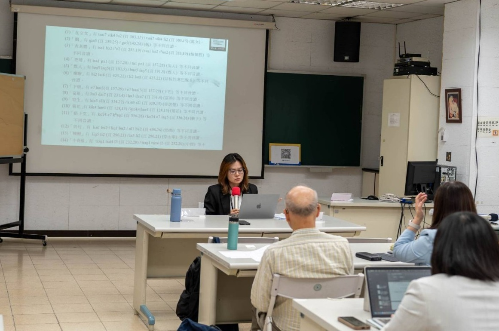
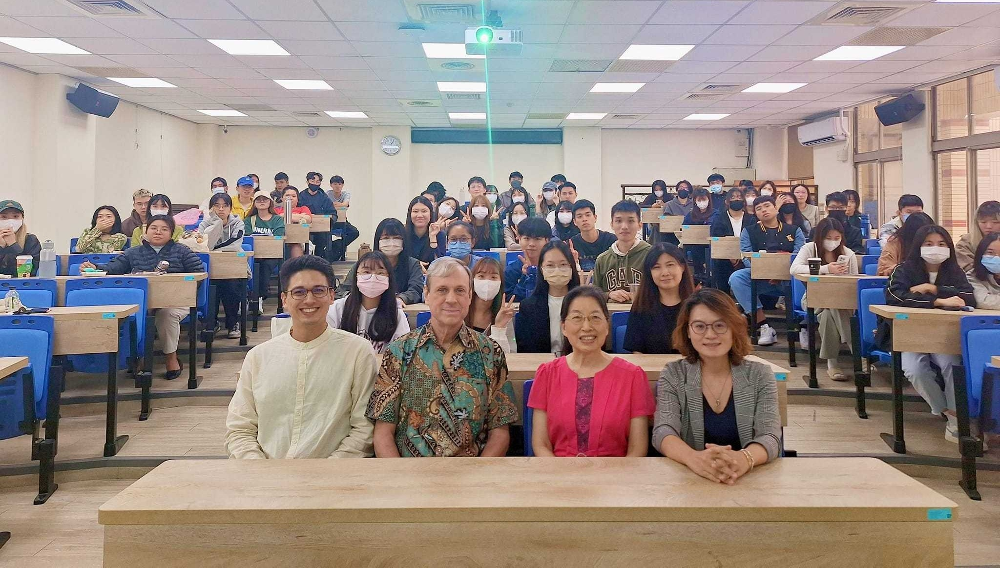

Academic Participations


學術參與 Academic Participations
審查/審稿/口試委員
- 台灣語言文學研究學術期刊《台灣語文研究》| 台灣語文學會 | 審查委員
- 國立勤益科技大學應用英語系112學年度實務專題 | 口試委員
- 國立勤益科技大學應用英語系111學年度實務專題 | 口試委員
- 第五屆台灣創新發明教育學會年會暨國際研討會及第二十二屆管理學術研討會 | 審稿委員 | 2024.12
- 靜宜大學英國語文學系111學年度畢業專題發表會 | 外審委員 | 2023.05
研討會主持人/評論人
- 第十五屆台灣語言及其教學國際學術研討會 | 主持人&評論人 | 2024.11
- 第六屆新實踐暨台日大學地方連結與社會實踐國際研討會(科技部) | 評論人 | 2024.09
- 靜宜大學英國語文學系113學年度研究生論文研討會 | 主持人 | 2024.06
- 第五屆新實踐暨台日大學地方連結與社會實踐國際研討會(科技部) | 評論人 | 2023.09
- 第二屆新實踐暨台日大學地方連結與社會實踐國際研討會(科技部) | 評論人 | 2020.09
客座講師/主講人/與談人
- 靜宜大學《The Past and Present of Taiwanese Languages 台灣語言的前世與今生》| 客座講師 | 2024.04
- 靜宜大學112學年度統整計畫講座《田野調查與訪談：理論與實作的距離》| 主講人 | 2023.10
- 靜宜大學 TEEP@AsiaPlus Invited Speech《A Sociolinguistic Description of Language Change in Taiwan》| 客座講師 | 2020.05
- 台灣教育研究學會《2019台灣教育學術研討會—跨域、跨界的教育新契機》【教育創新與社會創新(二)】| 與談人 | 2019.11
活動主辦人
- 國立勤益科技大學應用英語系112學年度英語微電影比賽 | 主辦人 | 2024.01
- 國立勤益科技大學應用英語系112學年度英語歌唱競賽 | 主辦人 | 2023.05
- 國立勤益科技大學應用英語系111學年度科技商用英語演講競賽 | 主辦人 | 2022.10
研習課程
- 技專校院招生專業化總辦公室「全國技專技高108課綱學習歷程檔案交流座談會」| 研習 | 2023.12
- 教育部iLink人文社會與產業實務創新鏈結計畫「iLink計畫．雲端講堂」| 研習 | 2023.06
- 教育部iLink人文社會與產業實務創新鏈結計畫「第一期徵件培力工作坊」| 研習 | 2023.05
- 合興窯業工廠 | 專業實務研習 | 2022.09
- 卓也小屋 | 專業實務研習 | 2022.09
- 華氏七七餐飲 | 專業實務研習 | 2022.09
甄試/招生委員
- 國立勤益科技大學應用英語系114年推薦甄試委員
- 國立勤益科技大學應用英語系114年技優甄試委員
- 國立勤益科技大學應用英語系114年轉學考招生委員
- 國立勤益科技大學應用英語系113年推薦甄試委員
- 國立勤益科技大學應用英語系113年技優甄試委員
- 國立勤益科技大學應用英語系113年轉學考招生委員
- 國立勤益科技大學應用英語系112年推薦甄試委員
- 國立勤益科技大學應用英語系112年技優甄試委員
- 國立勤益科技大學應用英語系112年轉學考招生委員